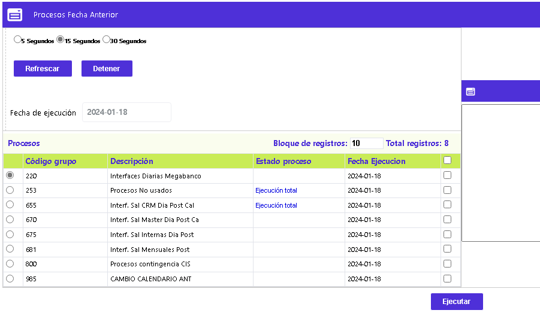
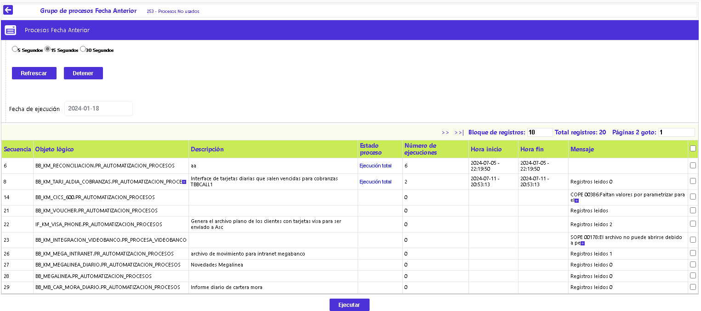

Procesos Fecha Anterior
En este formulario se muestran aquellos grupos de procesos a los que se les haya asignado valor Si, en el campo Procesa Fecha Ayer, en la opción Definición grupos de procesos y que su próxima fecha de ejecución corresponda a la fecha de proceso o del sistema de día anterior, producto de la ejecución del proceso OP_KM_AUTOMATIZACION_PROCESOS.PR_DEVOLVER_ANT. La entidad puede ordenar la ejecución por Grupo o para cada proceso de un grupo. Una vez se cambie de calendario, se eliminan todos los registros de este formulario, el cual únicamente se vuelve a poblar cuando se ejecute el proceso antes mencionado.
La pantalla principal se divide en dos partes en la cuales se encontrarán los Grupos de procesos a la izquierda, así como se muestra en la siguiente imagen.
Por otro lado, la opción cuenta con el enlace Procesos que nos permite consultar el detalle de algunos de los procesos pertenecientes al grupo que, por alguna razón hayan presentado error en su ejecución.

Ejecutar: Al activar este botón especial, se inicia la ejecución de los grupos de procesos que se muestren en el formulario. A la derecha de esta pantalla se ubica una ventana que funciona como log de operaciones, describiendo las acciones y resultados de cada uno de los procesos que han sido ejecutados.
A través de esta pantalla principal el usuario puede validar el resultado de la ejecución de los Grupos de procesos y de los procesos que los componen. De esta forma el sistema tomará todos los procesos pertenecientes a estos Grupos, ejecutándolos, si aplica, de acuerdo a la parametrización de precedentes realizada en la opción Definición grupos de procesos.
El sistema refrescará la pantalla junto con el log de operaciones de acuerdo a los rangos de tiempo definidos en la parte superior. Estos pueden establecerse entre 5, 15 ó 30 segundos. Por defecto estos rangos están apagados y sólo se activan al seleccionar uno de ellos y luego usar los botones Detener y luego Refrescar.
Antes de iniciar la ejecución del primer grupo en el día, el sistema los muestra con el campo Estado proceso en blanco. Luego éste varia de acuerdo al estado de los Procesos ejecutados por cada Grupo, dato que puede tomar alguno de los siguientes valores:
Proceso en ejecución |
El sistema está corriendo el paquete del proceso. |
|---|---|
Ejecución parcial |
El sistema ha presentado algún error que puede ser consultado directamente en el log de operaciones o en el Histórico de procesos. |
Ejecución total |
El proceso ha finalizado exitosamente. |
Proceso pendiente o Proceso en cola |
El sistema identifica estos procesos como pendientes por procesar. |
Procesos:Al activar ese enlace se despliega un formulario que permite la consulta del detalle de la ejecución de cada uno de los Procesos pertenecientes al Grupo seleccionado en la pantalla principal. Tal como aplica para la ejecución de Grupos descrita arriba, esta pantalla permite la actualización a través de los mismos rangos de 5, 15 o 30 segundos, y mostrando el estado de los procesos y su Número de ejecuciones. En caso de presentarse algún error, será mostrado en el campo Mensaje de esta misma pantalla.
